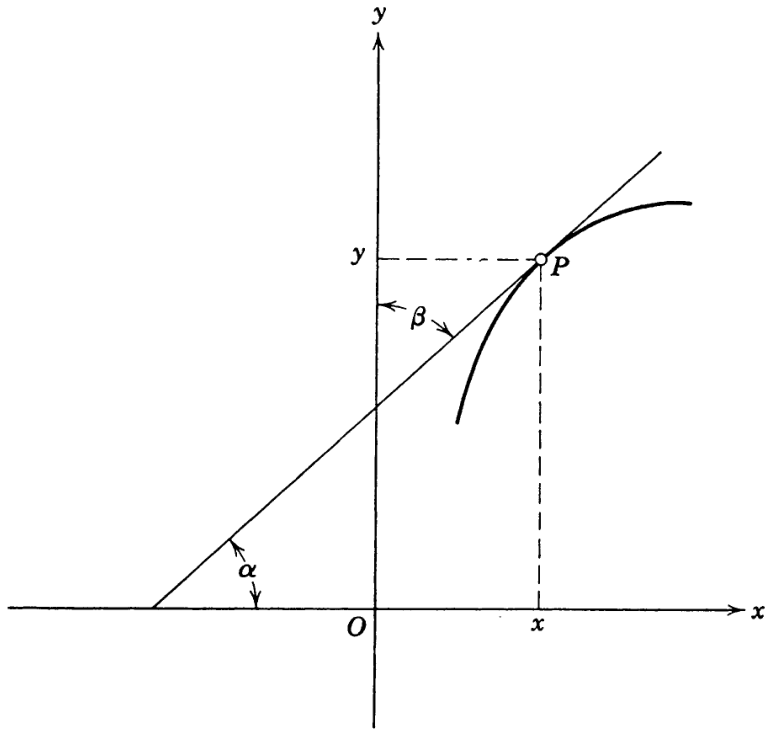
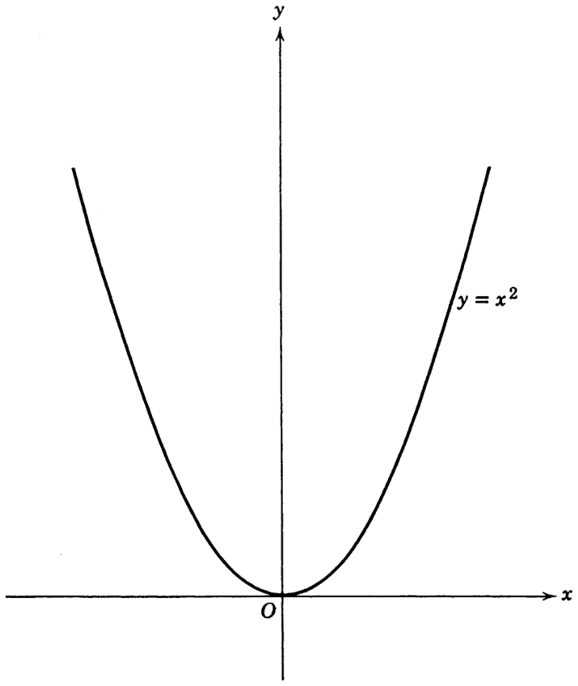
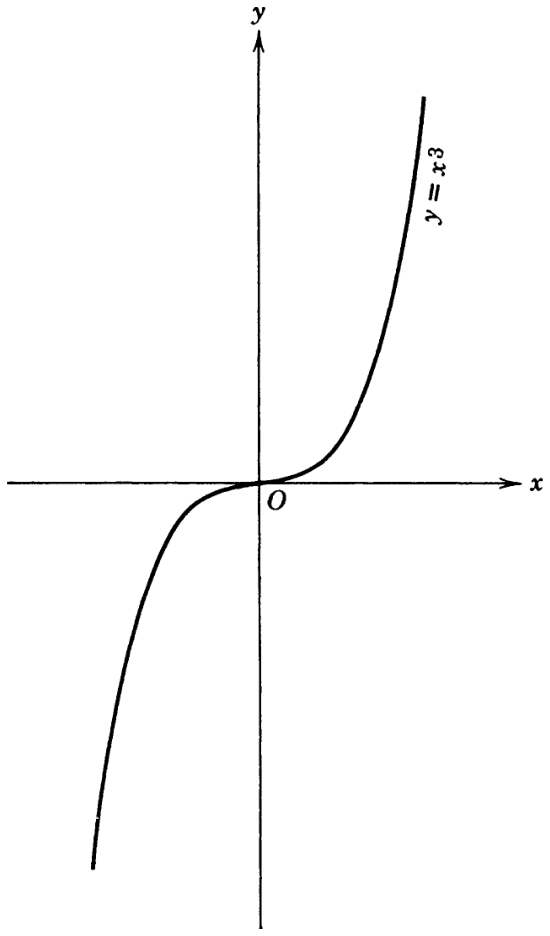
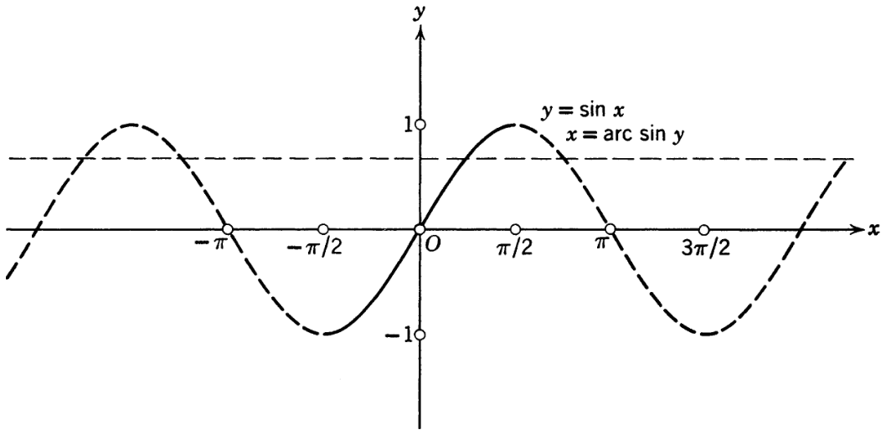
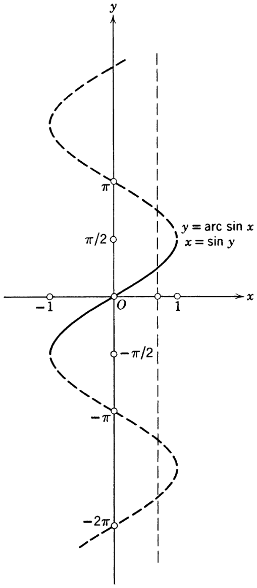
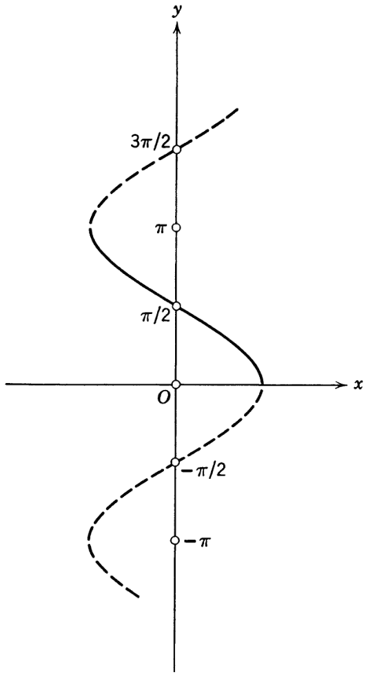
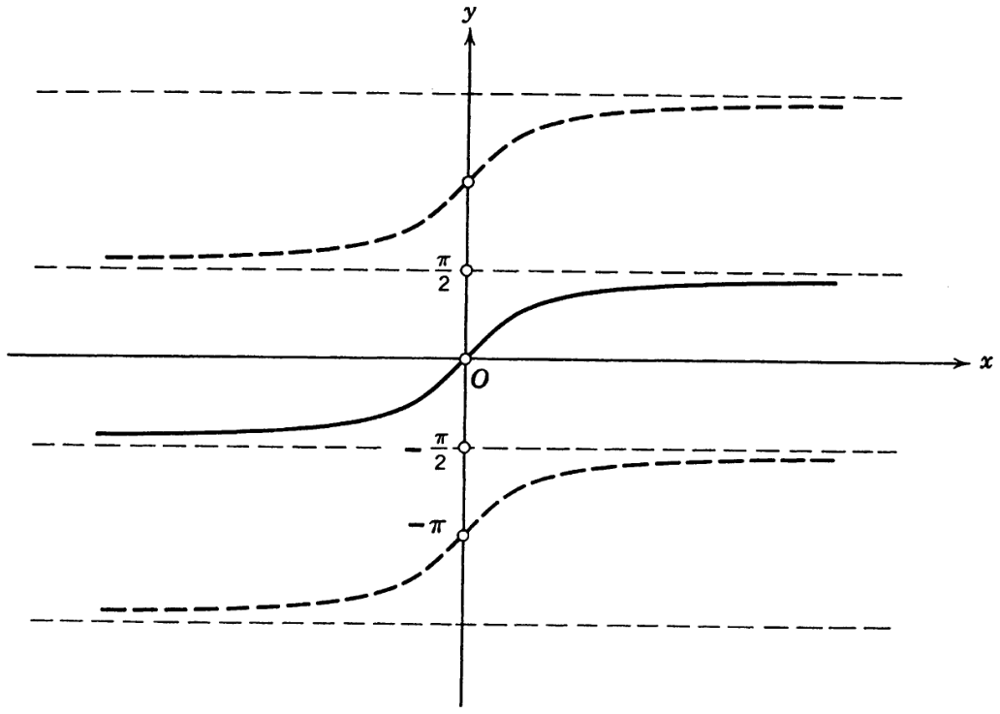
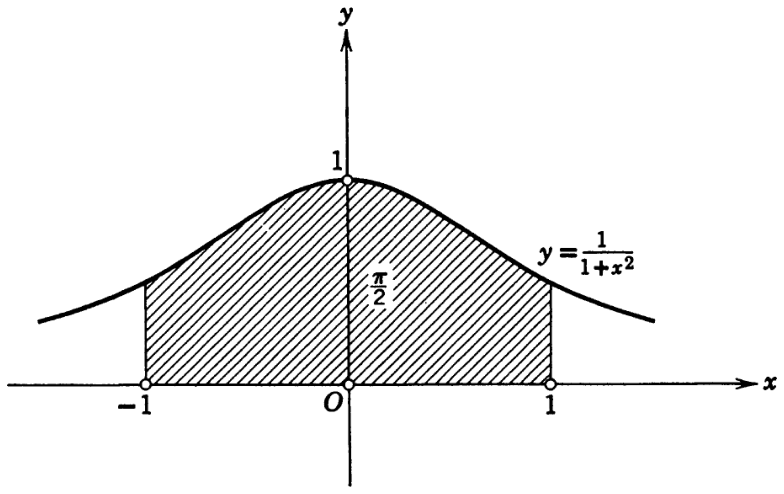

a. 一般公式
在第 45 页，我们已经看到，连续函数 y=f(x) 在它单调的每个区间上都有连续的反函数。确切地说，若连续函数 y=f(x) 在 a≤x≤b 上严格单调，且 f(a)=α, f(b)=β，则 f 有反函数，它在 α 与 β 之间的区间上连续而且单调。
如第 177 页所指出的，由导数的符号可以简单地判定函数是否单调、因而是否有反函数。可微函数必连续。在 f′(x)>0 的区间上它单调增加；在 f′(x) 处处小于零的区间上它单调减少。关于反函数的导数，现证明以下定理。
定理。 设 y=f(x) 在区间 a<x<b 内可微，且在整个区间内恒有 f′(x)>0 或恒有 f′(x)<0。那么反函数 x=ϕ(y) 在其定义区间的每一内点也可微。在相互对应的 x,y 处，函数与反函数的导数满足 f′(x)⋅ϕ′(y)=1。
这个关系也可以写成
dxdy=dydx1.(5)这个公式再次表明莱布尼茨记号选得贴切。在这种公式里，形式上的商 dy/dx 可以像真正的分数那样运算。
证明。 把导数写成差商的极限：
y′=f′(x)=Δx→0limΔxΔy=x1→xlimx1−xy1−y,其中 x 与 y=f(x)、x1 与 y1=f(x1) 分别为两对对应值。按假设，此极限非零。因为 y=f(x) 及 x=ϕ(y) 连续，y1→y 与 x1→x 等价。因此极限
x1→xlimy1−yx1−x=y1→ylimy1−yx1−x存在且等于 1/f′(x)。另一方面，按定义，右边的极限就是反函数的导数 ϕ′(y)。公式得证。
图 3.1 清楚地说明了它的几何意义。曲线 y=f(x)，亦即 x=ϕ(y)，其切线与 x 轴正向成角 α，与 y 轴正向成角 β。依照导数作为切线斜率的几何解释，f′(x)=tanα，ϕ′(y)=tanβ。因为 α+β=π/2，所以 tanαtanβ=1，这恰好就是求导公式。

图 3.1 反函数的导数。
临界点
以上明确假设 f′(x)>0 或 f′(x)<0，也就是 f′(x) 从不为零。如果 f′(x)=0 会怎样？若在整个区间上处处有 f′(x)=0，则 f 在该区间上为常数，一切 x 都对应于同一个 y，因此没有反函数。若只在孤立的“临界”点上有 f′(x)=0，并假设 f′(x) 连续，就要看经过这些点时 f′(x) 是否改变符号。若改变符号，该点把函数单调增加的一段与单调减少的一段分开，因而在该点附近不可能有单值的反函数。若不改变符号，导数在一点为零并不妨碍 y=f(x) 的单调性，单值反函数仍然存在。但在相应点上反函数不再可微，实际上它在那里的导数为无穷大。函数 y=x2 与 y=x3 在 x=0 处正好说明这两种情形。图 3.2 和图 3.3 表明两个函数经过原点时有何不同，y=x3 有单值反函数，y=x2 则没有。

图 3.2 抛物线。

图 3.3 三次抛物线。
译者注 “导数为无穷大”是曲线有竖直切线的说法，导数没有有限实数值。例如 x=y1/3 在 y=0 的差商是 1/(Δy)2/3，从两侧都趋于 +∞。
b. n 次幂的反函数，即 n 次根
最简单的例子是正整数 n 次幂 y=xn 的反函数。先设 x>0，于是 y>0。此时 y′ 恒正，因此对于一切正的 y 都有唯一的反函数 x=ny=y1/n。由一般法则，立即得到
dyd(y1/n)=dydx=dy/dx1=nxn−11=n1y(n−1)/n1=n1y(1/n)−1.若改变记号，仍用 x 表示自变量，则
dxdnx=dxd(x1/n)=n1x(1/n)−1,这与第 164 页所得的结果一致。当 n>1 时，点 x=0 须单独考虑。若 x 从正值趋于零，则 d(x1/n)/dx 显然无限增大。这对应于 n>1 时 f(x)=xn 在原点的导数为零。从几何上看，n>1 时，曲线 y=x1/n 在原点与 y 轴相切（参见第 48 页图 1.35）。
当 n 是奇数时，可以去掉 x>0 的假设。函数 y=xn 在全体实数上单调，并有反函数。公式 d(ny)/dy=(1/n)y(1/n)−1 对负的 y 仍然成立。但在 x=0, n>1 时有 d(xn)/dx=0，相应地，在 y=0 处反函数的 dx/dy 为无穷大。
c. 反三角函数及其多值性
为了构造三角函数的反函数，我们再看一看 sinx,cosx,tanx,cotx 的图像。¹ 从第 50 页图 1.37 和第 51 页图 1.38 立即可见，要使反函数唯一，必须为每个函数选定一个区间；因为平行于 x 轴的直线 y=c 只要同这些曲线相交，就有无穷多个交点。
原注 1（第 210 页） 借助图像，反函数的“多值性”所带来的一点困难就较容易克服了。
反正弦与反余弦
以 y=sinx 为例（图 3.4），导数 y′=cosx 在 −π/2<x<π/2 内为正。在这一区间上 y=sinx 有反函数，记为¹
x=arcsiny（读作“反正弦 y”，即正弦等于 y 的那个角）。当 y 从 −1 变到 +1，此函数单调地从 −π/2 增至 +π/2。若要强调取的是正弦在这一特定区间上的反函数，就说反正弦的主值。若选取 sinx 单调的另一区间，例如 +π/2<x<3π/2，就得到反正弦的另一个反函数，即另一个“分支”。如果没有确切指定反函数值所在的区间，arcsin 这个符号实际上表示无穷多个值。² 反正弦的多值性可以这样说明：正弦值 y 除了对应于一个特定角 x，还对应于一切形如 2kπ+x 或 (2k+1)π−x 的角，其中 k 为任意整数（图 3.4）。

图 3.4 y = sin x 的图像，实线表示选取主值的部分。
原注 1（第 211 页） 也用记号 x=sin−1y，但要避免同倒数函数 1/sinx 相混淆。
原注 2（第 211 页） 有时也不甚严格地称之为多值函数。

图 3.5 y = arc sin x 的图像，实线表示主值。
根据式 (5)，x=arcsiny 的导数为
dydx=y′1=cosx1=±1−sin2x1=±1−y21.如果只考虑最先提到的区间 −π/2<x<π/2，根号前应取正号。¹ 把自变量的名称由 y 改成惯用的 x（图 3.5），便得到反正弦的导数
dxdarcsinx=1−x21.这里取的是介于 −π/2 与 +π/2 的主值，平方根取正值。
原注 1（第 212 页） 若改取 π/2<x<3π/2，相当于用 x+π 代替 x，因该区间内 cosx<0，平方根前就须取负号。

图 3.6 y = arc cos x 的图像，实线表示主值。
把 y=cosx 的反函数（同样互换名称 x,y）记为 arccosx。同样的方法给出
dxdarccosx=∓1−x21.若 arccosx 的值取在 0 到 π 的区间中（反正弦的主值则取在 −π/2 与 +π/2 之间），应当取负号（图 3.6）。趋于端点 x=−1,+1 时，这些导数的绝对值趋于无穷大，相应的反正弦和反余弦曲线在那里都有竖直切线。
反正切与反余切
正切与余切的反函数可同样处理。在 x=π/2+kπ 处，y=tanx 的导数 1/cos2x 恒正，它在区间 −π/2<x<π/2 内有唯一的反函数。称此反函数为 x=arctany（的主支）。从图 3.7 立即可见，对于同一自变量，所得角度加上任意 kπ 都给出另一个可能值，其中 k 是整数。同样，若约定取值在 0 到 π 之间，则 y=cotx 的反函数 x=arccoty 唯一确定；省去这一约定时，反余切的多值性与反正切完全相同。

图 3.7 y = arc tan x 的图像，实线表示主值。
求导公式如下：
x=arctany,x=arccoty,dydx=dy/dx1=cos2x=1+tan2x1=1+y21,dydx=−sin2x=−1+cot2x1=−1+y21.仍用 x 表示自变量，最后就有
dxdarctanx=1+x21,dxdarccotx=−1+x21.d. 相应的积分公式
把刚刚导出的公式写成不定积分，就得到
∫1−x21dx∫1+x21dx=arcsinx,=arctanx,∫1−x21dx∫1+x21dx=−arccosx,=−arccotx.每一行都用同一个不定积分表示了两个不同的函数，却并不矛盾。它们说明了 §2.9 的结论，同一函数的任意两个不定积分只相差一个常数。这里的常数是 π/2，因为 arccosx+arcsinx=π/2，arctanx+arccotx=π/2。
这些不定积分公式可以立即用来求定积分，就像第 143 页所做的那样。特别地，
∫ab1+x2dx=arctanx∣ab=arctanb−arctana.令 a=0, b=1，并注意 tan0=0, tan(π/4)=1，便得到一个引人注目的公式：
4π=∫011+x21dx.(6)数 π 原是从考察圆得到的，这个公式却把它同有理函数 1/(1+x2) 以十分简单的方式联系起来，图 3.8 的面积就表示 π/2。我们在第 445 页还要回到这个公式。它是微积分在早期显示其威力的成果之一。

图 3.8 用面积表示 π/2。
更一般地，用本节的积分公式可以纯粹从分析出发定义三角函数，无须借助三角形、圆等几何对象。例如，角 y 与它的正切 x=tany 之间的关系，完全由方程
y=∫0x1+u2du描述，至少在 −π/2<y<π/2 时如此。在一个直角三角形中，若一个角 y 的邻边为 a、对边为 b，且 b/a=x，我们现在无需诉诸直观，就可以利用这一关系定义角 y 的数值。用数值量作这样的分析定义，为高等分析中使用角和三角函数提供了依据，可以独立于任何通过几何作图给出的定义。
e. 指数函数的导数与积分
第二章第 150 页把指数函数作为对数的反函数引入。确切地说，那里把关系 y=ex 和 x=logy 定义为等价的。因此它们的导数满足下列关系［见第 207 页式 (5)］：
dxdex=dxdy=dydx1=dydlogy1=1/y1=y=ex.指数函数等于自身的导数，即 dxdex=ex。
更一般地，对正底数 a，函数 y=ax 的反函数为 x=logay=logy/loga，而 ax 的导数是
dxdax=dydlogay1=(loga)y=(loga)ax.所以，对于任何正常数 a，函数 y=ax 的导数与函数本身成正比。a=e 时，比例因子 loga 等于 1。反过来，在第 223 页将证明，与其导数相等的函数必定形如 y=cex，其中 c 为常因子。
译者注 通过反函数推导时须有 a=1。若 a=1，函数恒为 1，导数公式的两端仍都等于零。第 217 页原文在 cex 之前用了“与导数成正比”的措辞；一般的 y′=ky 对应于 cekx，其中 k=1 才给出 cex。
利用微积分基本定理，也可把 ex 和 ax 的求导公式改写为不定积分公式：
∫exdx=ex,∫axdx=loga1ax.